Krummhörn main effects
Loading details
library(data.table); library(ggplot2); library(knitr); library(lme4); library(blme)
opts_chunk$set(warning=TRUE, cache=T,tidy=FALSE,autodep=TRUE,dev=c('png','pdf'),fig.width=20,fig.height=12.5,out.width='1440px',out.height='900px',cache.extra=file.info('krmh.rdata')[, 'mtime'])
source("0__helpers.R")
load("krmh.rdata")
Analysis description
Data subset
The krmh.1 dataset contains only those participants where paternal age is known, the birthdate is between 1720 and 1850 and the marriage is known (meaning we know when it started and how it ended by spousal death). In known marriages we can assume that missing death dates for the kids mean that they migrated out.
Model description
All of the following models have the following in common:
Multivariate normal prior
Using the R package blme which provides a thin Bayesian wrapper around lme4, we define a weak multivariate normal prior on the fixed effects. Especially in models where we have many covariates and the outcome has little variability (e.g. child mortality in modern Sweden), this helps us to combat complete separation and the Hauck-Donner effect. In the absence of these conditions, the extremely weak prior (SD = 9) leads to results that are identical or very similar to the standard lme4 models.
Optimizer settings
Bobyqa is fairly robust to convergence failures. In addition to using Bobyqa, we center some variables that otherwise lead to large eigenvalues.
control_defaults = glmerControl(optimizer = "bobyqa")
Main predictor
The main predictor, paternal age, has been binned into meaningful bins. This way, we let the data speak and can see whether the shape of the relationship is consistent with a linear effect. To this end we plot a linear regression through the best estimates for each factor (inversely weighted by confidence interval width, i.e. certainty). Even if a nonlinear fit might be slightly better, our theory clearly predicts a linear fit, so we are satisfied it the data is consistent with a linear effect.
formr::crosstabs(krmh.1$paternalage.factor)
## krmh.1$paternalage.factor
## [0,25] (25,30] (30,35] (35,40] (40,45] (45,50] (50,55] (55,90]
## 987 3521 4280 3556 2275 1138 473 203
Covariates
We control for birth.cohort (birth years in five equally large bins), male sex.
Model stratification
We added random intercepts for each family (father-mother dyad). We then controlled for the average paternal age in the family. Hence, the paternal age effects in the plot are split into those between families and those within families or between siblings. The relevant effect for our hypothesized mechanism, de novo mutations, is paternal age between siblings.
Episodes of selection
Here, episodes of selection refers to survival, mating success, reproductive success. To steer clear of sacrificial pseudo-replication, we make sure that each effect cannot be explained by the episode of selection preceding it. At its simplest, we check for effect on survival to reproduction only among those who lived to their first birthday. In later models, we look for an effect on number of children only among those who married and control their number of spouses.
Survival to first year
Survive_infancy <- bglmer(
survive1y ~ birth.cohort + male + paternalage.mean + paternalage.factor + (1|idParents),
data= krmh.1,
family = 'binomial', control = control_defaults,
fixef.prior = normal() )
summary(Survive_infancy)
## Cov prior : idParents ~ wishart(df = 3.5, scale = Inf, posterior.scale = cov, common.scale = TRUE)
## Fixef prior: normal(sd = c(10, 2.5, ...), corr = c(0 ...), common.scale = FALSE)
## Prior dev : 56
##
## Generalized linear mixed model fit by maximum likelihood (Laplace
## Approximation) [bglmerMod]
## Family: binomial ( logit )
## Formula:
## survive1y ~ birth.cohort + male + paternalage.mean + paternalage.factor +
## (1 | idParents)
## Data: krmh.1
## Control: control_defaults
##
## AIC BIC logLik deviance df.resid
## 11928 12044 -5949 11898 16367
##
## Scaled residuals:
## Min 1Q Median 3Q Max
## -3.610 0.277 0.324 0.366 0.802
##
## Random effects:
## Groups Name Variance Std.Dev.
## idParents (Intercept) 0.382 0.618
## Number of obs: 16382, groups: idParents, 3762
##
## Fixed effects:
## Estimate Std. Error z value Pr(>|z|)
## (Intercept) 2.0463 0.1232 16.60 < 2e-16 ***
## birth.cohort(1773,1796] -0.0540 0.0792 -0.68 0.4951
## birth.cohort(1796,1814] 0.1245 0.0815 1.53 0.1267
## birth.cohort(1814,1830] 0.4608 0.0872 5.28 1.3e-07 ***
## birth.cohort(1830,1850] 0.5074 0.0904 5.61 2.0e-08 ***
## male -0.1629 0.0512 -3.18 0.0015 **
## paternalage.mean 0.1289 0.0695 1.85 0.0637 .
## paternalage.factor(25,30] 0.0666 0.1164 0.57 0.5676
## paternalage.factor(30,35] 0.0910 0.1193 0.76 0.4457
## paternalage.factor(35,40] -0.0431 0.1265 -0.34 0.7333
## paternalage.factor(40,45] -0.0759 0.1414 -0.54 0.5915
## paternalage.factor(45,50] -0.0850 0.1709 -0.50 0.6188
## paternalage.factor(50,55] -0.4460 0.2124 -2.10 0.0357 *
## paternalage.factor(55,90] -0.5026 0.2934 -1.71 0.0868 .
## ---
## Signif. codes: 0 '***' 0.001 '**' 0.01 '*' 0.05 '.' 0.1 ' ' 1
##
## Correlation of Fixed Effects:
## (Intr) b.(177 b.(179 b.(181 b.(183 male ptrnl. p.(25, p.(30,
## b.(1773,179 -0.299
## b.(1796,181 -0.310 0.514
## b.(1814,183 -0.284 0.464 0.480
## b.(1830,185 -0.233 0.453 0.452 0.439
## male -0.234 0.005 0.003 0.021 0.011
## paternlg.mn 0.359 -0.011 0.001 0.033 0.037 -0.007
## ptr.(25,30] -0.764 -0.014 0.002 -0.010 -0.028 -0.002 -0.170
## ptr.(30,35] -0.794 -0.029 -0.012 -0.018 -0.065 0.001 -0.306 0.786
## ptr.(35,40] -0.789 -0.036 -0.022 -0.030 -0.087 0.005 -0.410 0.763 0.810
## ptr.(40,45] -0.749 -0.039 -0.034 -0.040 -0.091 0.007 -0.493 0.704 0.765
## ptr.(45,50] -0.671 -0.033 -0.027 -0.043 -0.085 0.001 -0.553 0.607 0.677
## ptr.(50,55] -0.588 -0.039 -0.034 -0.048 -0.080 0.011 -0.585 0.512 0.587
## ptr.(55,90] -0.478 -0.022 -0.020 -0.045 -0.058 -0.005 -0.577 0.396 0.471
## p.(35, p.(40, p.(45, p.(50,
## b.(1773,179
## b.(1796,181
## b.(1814,183
## b.(1830,185
## male
## paternlg.mn
## ptr.(25,30]
## ptr.(30,35]
## ptr.(35,40]
## ptr.(40,45] 0.787
## ptr.(45,50] 0.711 0.712
## ptr.(50,55] 0.629 0.642 0.624
## ptr.(55,90] 0.516 0.538 0.534 0.521
Survive_infancy_coefs = fortify_mine(Survive_infancy)
plot_fortified_mer(Survive_infancy_coefs, "Surviving infancy / first year")
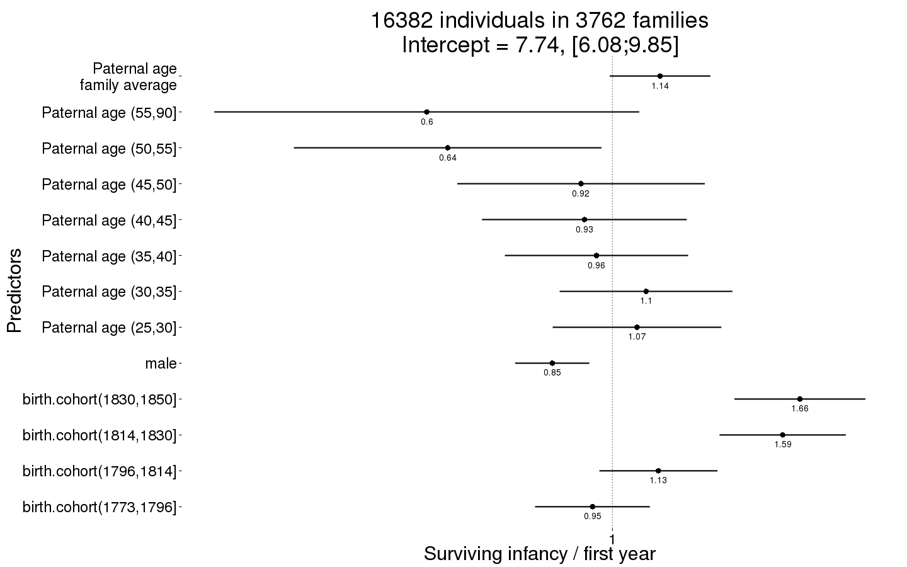
Survive_infancy_boot = plot_factor_response(Survive_infancy)
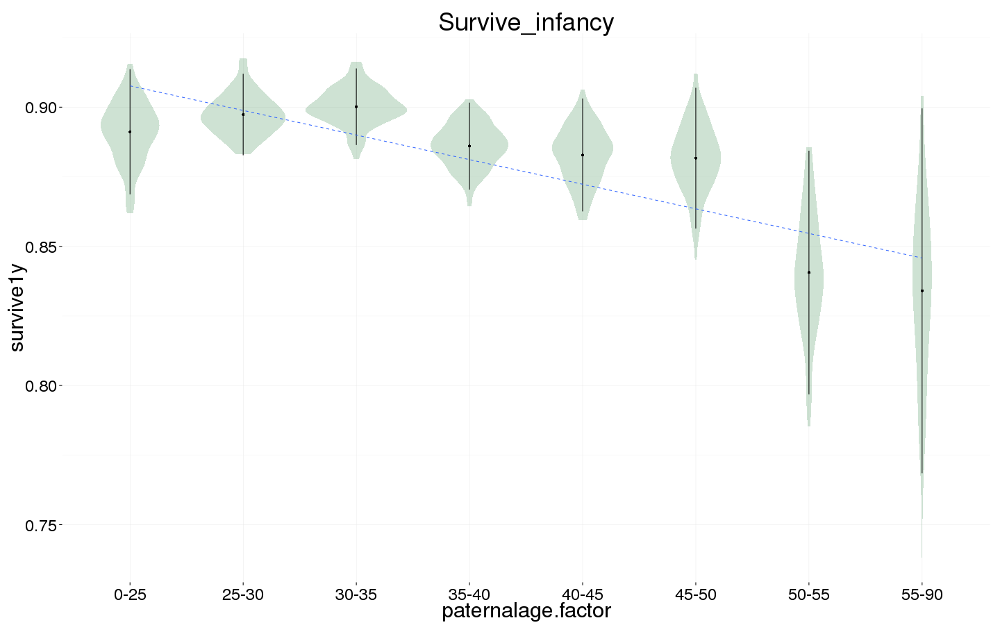
Survival to reproductive age
Survive_reproductive <- bglmer(
surviveR ~ birth.cohort + male + paternalage.mean + paternalage.factor + (1|idParents),
data= krmh.1, subset = survive1y == TRUE & byear < 1845,
family = 'binomial', control = control_defaults,
fixef.prior = normal() )
summary(Survive_reproductive)
## Cov prior : idParents ~ wishart(df = 3.5, scale = Inf, posterior.scale = cov, common.scale = TRUE)
## Fixef prior: normal(sd = c(10, 2.5, ...), corr = c(0 ...), common.scale = FALSE)
## Prior dev : 56
##
## Generalized linear mixed model fit by maximum likelihood (Laplace
## Approximation) [bglmerMod]
## Family: binomial ( logit )
## Formula:
## surviveR ~ birth.cohort + male + paternalage.mean + paternalage.factor +
## (1 | idParents)
## Data: krmh.1
## Control: control_defaults
## Subset: survive1y == TRUE & byear < 1845
##
## AIC BIC logLik deviance df.resid
## 12225 12338 -6098 12195 13653
##
## Scaled residuals:
## Min 1Q Median 3Q Max
## -2.938 0.341 0.393 0.450 0.759
##
## Random effects:
## Groups Name Variance Std.Dev.
## idParents (Intercept) 0.278 0.527
## Number of obs: 13668, groups: idParents, 3520
##
## Fixed effects:
## Estimate Std. Error z value Pr(>|z|)
## (Intercept) 1.40308 0.11397 12.31 < 2e-16 ***
## birth.cohort(1773,1796] 0.05251 0.07268 0.72 0.47
## birth.cohort(1796,1814] 0.34879 0.07563 4.61 4.0e-06 ***
## birth.cohort(1814,1830] 0.46139 0.07672 6.01 1.8e-09 ***
## birth.cohort(1830,1850] 0.66408 0.08894 7.47 8.2e-14 ***
## male 0.01053 0.04804 0.22 0.83
## paternalage.mean 0.05786 0.06538 0.88 0.38
## paternalage.factor(25,30] 0.13288 0.10922 1.22 0.22
## paternalage.factor(30,35] 0.01301 0.11093 0.12 0.91
## paternalage.factor(35,40] 0.00212 0.11851 0.02 0.99
## paternalage.factor(40,45] -0.07807 0.13248 -0.59 0.56
## paternalage.factor(45,50] -0.03972 0.16050 -0.25 0.80
## paternalage.factor(50,55] 0.02603 0.21466 0.12 0.90
## paternalage.factor(55,90] 0.00813 0.30644 0.03 0.98
## ---
## Signif. codes: 0 '***' 0.001 '**' 0.01 '*' 0.05 '.' 0.1 ' ' 1
##
## Correlation of Fixed Effects:
## (Intr) b.(177 b.(179 b.(181 b.(183 male ptrnl. p.(25, p.(30,
## b.(1773,179 -0.281
## b.(1796,181 -0.287 0.486
## b.(1814,183 -0.283 0.464 0.470
## b.(1830,185 -0.205 0.405 0.398 0.409
## male -0.224 0.008 0.001 0.023 0.010
## paternlg.mn 0.361 -0.008 -0.001 0.029 0.034 -0.006
## ptr.(25,30] -0.771 -0.014 -0.001 -0.006 -0.022 -0.001 -0.168
## ptr.(30,35] -0.809 -0.032 -0.017 -0.016 -0.056 0.006 -0.307 0.788
## ptr.(35,40] -0.798 -0.038 -0.023 -0.026 -0.080 0.008 -0.408 0.758 0.812
## ptr.(40,45] -0.758 -0.045 -0.037 -0.040 -0.082 0.012 -0.497 0.701 0.768
## ptr.(45,50] -0.678 -0.033 -0.030 -0.043 -0.074 -0.001 -0.561 0.603 0.680
## ptr.(50,55] -0.554 -0.045 -0.031 -0.041 -0.063 0.009 -0.554 0.473 0.549
## ptr.(55,90] -0.436 -0.017 -0.020 -0.037 -0.036 -0.008 -0.526 0.354 0.426
## p.(35, p.(40, p.(45, p.(50,
## b.(1773,179
## b.(1796,181
## b.(1814,183
## b.(1830,185
## male
## paternlg.mn
## ptr.(25,30]
## ptr.(30,35]
## ptr.(35,40]
## ptr.(40,45] 0.784
## ptr.(45,50] 0.708 0.713
## ptr.(50,55] 0.584 0.601 0.585
## ptr.(55,90] 0.463 0.486 0.485 0.443
Survive_reproductive_coefs = fortify_mine(Survive_reproductive)
plot_fortified_mer(Survive_reproductive_coefs, "Surviving to reproductive age / 15 years")
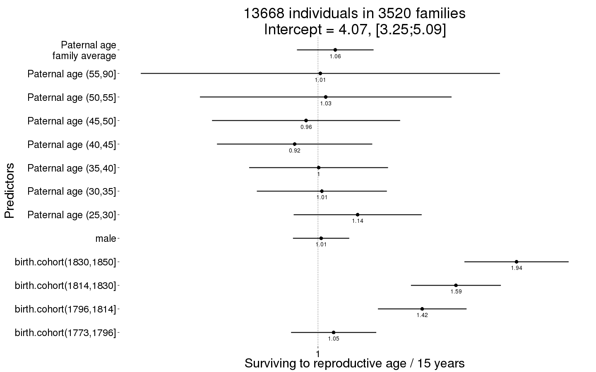
Survive_reproductive_boot = plot_factor_response(Survive_reproductive)
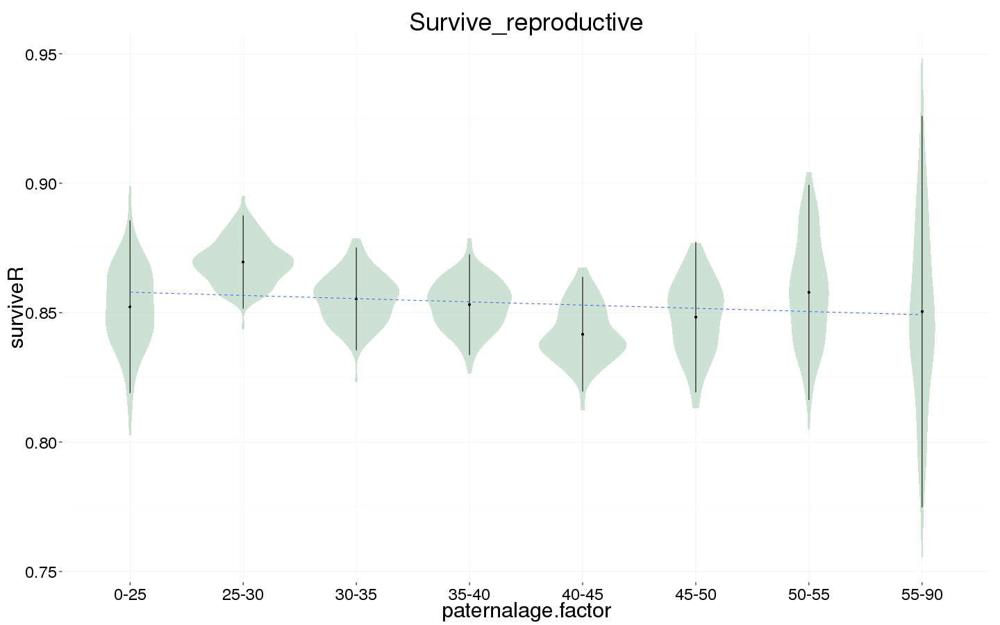
Ever married
Ever_married <- bglmer(
ever_married ~ birth.cohort + male + paternalage.mean + paternalage.factor + (1|idParents),
data= krmh.1, subset = surviveR == T & byear < 1835,
family = 'binomial', control = control_defaults,
fixef.prior = normal() )
summary(Ever_married)
## Cov prior : idParents ~ wishart(df = 3.5, scale = Inf, posterior.scale = cov, common.scale = TRUE)
## Fixef prior: normal(sd = c(10, 2.5, ...), corr = c(0 ...), common.scale = FALSE)
## Prior dev : 56
##
## Generalized linear mixed model fit by maximum likelihood (Laplace
## Approximation) [bglmerMod]
## Family: binomial ( logit )
## Formula:
## ever_married ~ birth.cohort + male + paternalage.mean + paternalage.factor +
## (1 | idParents)
## Data: krmh.1
## Control: control_defaults
## Subset: surviveR == T & byear < 1835
##
## AIC BIC logLik deviance df.resid
## 13002 13110 -6486 12972 10093
##
## Scaled residuals:
## Min 1Q Median 3Q Max
## -2.135 -1.006 0.558 0.726 1.693
##
## Random effects:
## Groups Name Variance Std.Dev.
## idParents (Intercept) 0.381 0.617
## Number of obs: 10108, groups: idParents, 3106
##
## Fixed effects:
## Estimate Std. Error z value Pr(>|z|)
## (Intercept) 0.3478 0.1065 3.27 0.00109 **
## birth.cohort(1773,1796] 0.4896 0.0687 7.13 1e-12 ***
## birth.cohort(1796,1814] 0.7282 0.0687 10.60 < 2e-16 ***
## birth.cohort(1814,1830] 0.9793 0.0696 14.07 < 2e-16 ***
## birth.cohort(1830,1850] 0.9274 0.1086 8.54 < 2e-16 ***
## male -0.4455 0.0439 -10.14 < 2e-16 ***
## paternalage.mean 0.1692 0.0605 2.80 0.00518 **
## paternalage.factor(25,30] -0.0147 0.1002 -0.15 0.88340
## paternalage.factor(30,35] -0.1113 0.1027 -1.08 0.27823
## paternalage.factor(35,40] -0.1429 0.1098 -1.30 0.19284
## paternalage.factor(40,45] -0.4252 0.1228 -3.46 0.00054 ***
## paternalage.factor(45,50] -0.4502 0.1465 -3.07 0.00213 **
## paternalage.factor(50,55] -0.7362 0.1896 -3.88 0.00010 ***
## paternalage.factor(55,90] -0.6088 0.2690 -2.26 0.02366 *
## ---
## Signif. codes: 0 '***' 0.001 '**' 0.01 '*' 0.05 '.' 0.1 ' ' 1
##
## Correlation of Fixed Effects:
## (Intr) b.(177 b.(179 b.(181 b.(183 male ptrnl. p.(25, p.(30,
## b.(1773,179 -0.296
## b.(1796,181 -0.306 0.519
## b.(1814,183 -0.295 0.491 0.533
## b.(1830,185 -0.156 0.316 0.329 0.359
## male -0.225 -0.004 -0.019 -0.003 0.005
## paternlg.mn 0.344 -0.012 -0.001 0.042 0.055 -0.006
## ptr.(25,30] -0.776 -0.005 -0.002 -0.007 -0.022 0.002 -0.165
## ptr.(30,35] -0.806 -0.020 -0.015 -0.021 -0.059 0.008 -0.301 0.800
## ptr.(35,40] -0.792 -0.030 -0.021 -0.033 -0.067 0.010 -0.395 0.767 0.815
## ptr.(40,45] -0.750 -0.038 -0.039 -0.058 -0.069 0.018 -0.486 0.708 0.769
## ptr.(45,50] -0.675 -0.023 -0.034 -0.057 -0.076 0.007 -0.542 0.615 0.686
## ptr.(50,55] -0.563 -0.042 -0.037 -0.058 -0.073 0.011 -0.553 0.496 0.569
## ptr.(55,90] -0.445 -0.018 -0.026 -0.053 -0.052 0.002 -0.534 0.373 0.443
## p.(35, p.(40, p.(45, p.(50,
## b.(1773,179
## b.(1796,181
## b.(1814,183
## b.(1830,185
## male
## paternlg.mn
## ptr.(25,30]
## ptr.(30,35]
## ptr.(35,40]
## ptr.(40,45] 0.781
## ptr.(45,50] 0.709 0.714
## ptr.(50,55] 0.600 0.617 0.602
## ptr.(55,90] 0.477 0.502 0.500 0.474
Ever_married_coefs = fortify_mine(Ever_married)
plot_fortified_mer(Ever_married_coefs, "Odds of ever marrying")
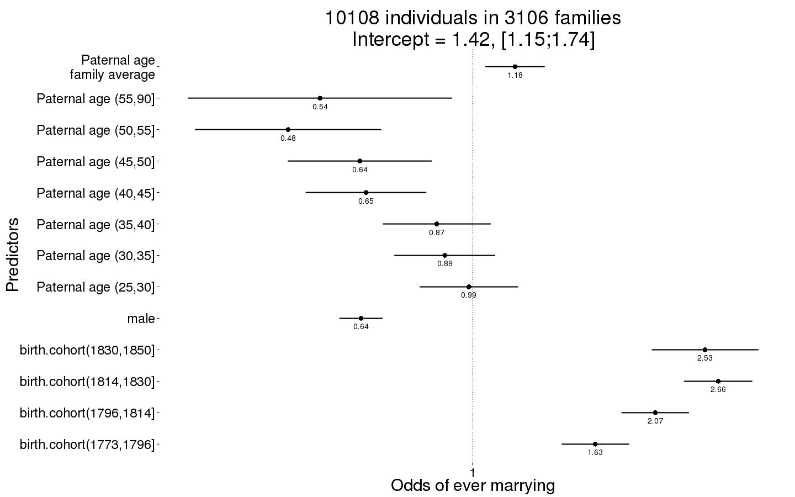
Ever_married_boot = plot_factor_response(Ever_married)
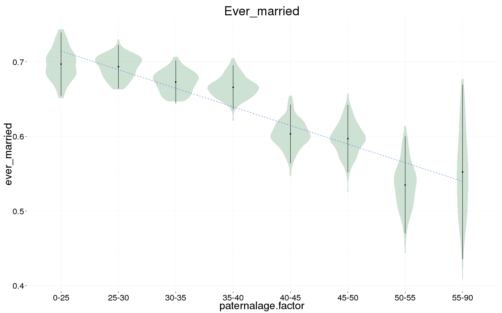
Number of children
Children <- bglmer(
children ~ center(spouses)*male + birth.cohort + paternalage.mean + paternalage.factor + (1|idParents) + (1|idIndividu),
data= krmh.1, subset = spouses > 0 & byear < 1835,
family = 'poisson', control = control_defaults,
fixef.prior = normal() )
summary(Children)
## Cov prior : idIndividu ~ wishart(df = 3.5, scale = Inf, posterior.scale = cov, common.scale = TRUE)
## : idParents ~ wishart(df = 3.5, scale = Inf, posterior.scale = cov, common.scale = TRUE)
## Fixef prior: normal(sd = c(10, 2.5, ...), corr = c(0 ...), common.scale = FALSE)
## Prior dev : 69
##
## Generalized linear mixed model fit by maximum likelihood (Laplace
## Approximation) [bglmerMod]
## Family: poisson ( log )
## Formula:
## children ~ center(spouses) * male + birth.cohort + paternalage.mean +
## paternalage.factor + (1 | idParents) + (1 | idIndividu)
## Data: krmh.1
## Control: control_defaults
## Subset: spouses > 0 & byear < 1835
##
## AIC BIC logLik deviance df.resid
## 30634 30756 -15299 30598 6215
##
## Scaled residuals:
## Min 1Q Median 3Q Max
## -1.639 -0.721 0.107 0.496 1.211
##
## Random effects:
## Groups Name Variance Std.Dev.
## idIndividu (Intercept) 0.314 0.56
## idParents (Intercept) 0.017 0.13
## Number of obs: 6233, groups: idIndividu, 6233; idParents, 2660
##
## Fixed effects:
## Estimate Std. Error z value Pr(>|z|)
## (Intercept) 1.264672 0.053910 23.46 < 2e-16 ***
## center(spouses) 0.078690 0.037952 2.07 0.0381 *
## male -0.024834 0.038791 -0.64 0.5220
## birth.cohort(1773,1796] -0.029765 0.031837 -0.93 0.3498
## birth.cohort(1796,1814] -0.100939 0.030818 -3.28 0.0011 **
## birth.cohort(1814,1830] -0.162916 0.030409 -5.36 8.4e-08 ***
## birth.cohort(1830,1850] -0.193202 0.046989 -4.11 3.9e-05 ***
## paternalage.mean -0.000354 0.027141 -0.01 0.9896
## paternalage.factor(25,30] -0.016469 0.044478 -0.37 0.7112
## paternalage.factor(30,35] -0.033940 0.045684 -0.74 0.4575
## paternalage.factor(35,40] -0.096370 0.049078 -1.96 0.0496 *
## paternalage.factor(40,45] -0.030720 0.055818 -0.55 0.5821
## paternalage.factor(45,50] -0.126396 0.067865 -1.86 0.0625 .
## paternalage.factor(50,55] 0.030247 0.089246 0.34 0.7347
## paternalage.factor(55,90] -0.245471 0.125151 -1.96 0.0498 *
## center(spouses):male 0.208569 0.051294 4.07 4.8e-05 ***
## ---
## Signif. codes: 0 '***' 0.001 '**' 0.01 '*' 0.05 '.' 0.1 ' ' 1
##
## Correlation of Fixed Effects:
## (Intr) cntr() male b.(177 b.(179 b.(181 b.(183 ptrnl. p.(25,
## centr(spss) -0.457
## male -0.351 0.618
## b.(1773,179 -0.307 0.013 -0.015
## b.(1796,181 -0.320 0.024 -0.022 0.561
## b.(1814,183 -0.330 0.024 -0.016 0.565 0.594
## b.(1830,185 -0.177 0.006 -0.041 0.368 0.383 0.399
## paternlg.mn 0.309 0.011 0.004 -0.009 0.007 0.043 0.057
## ptr.(25,30] -0.679 0.003 -0.012 -0.014 -0.011 -0.014 -0.023 -0.178
## ptr.(30,35] -0.711 0.008 0.000 -0.019 -0.016 -0.011 -0.058 -0.317 0.797
## ptr.(35,40] -0.691 -0.004 -0.011 -0.030 -0.023 -0.028 -0.068 -0.416 0.765
## ptr.(40,45] -0.652 0.001 0.000 -0.028 -0.036 -0.041 -0.059 -0.507 0.697
## ptr.(45,50] -0.586 0.010 0.003 -0.013 -0.030 -0.044 -0.063 -0.565 0.599
## ptr.(50,55] -0.470 -0.014 -0.011 -0.045 -0.040 -0.054 -0.064 -0.562 0.480
## ptr.(55,90] -0.380 -0.009 -0.014 -0.015 -0.028 -0.043 -0.039 -0.544 0.367
## cntr(spss): 0.306 -0.739 -0.858 0.025 0.018 0.036 0.051 -0.008 0.011
## p.(30, p.(35, p.(40, p.(45, p.(50, p.(55,
## centr(spss)
## male
## b.(1773,179
## b.(1796,181
## b.(1814,183
## b.(1830,185
## paternlg.mn
## ptr.(25,30]
## ptr.(30,35]
## ptr.(35,40] 0.808
## ptr.(40,45] 0.756 0.767
## ptr.(45,50] 0.668 0.692 0.690
## ptr.(50,55] 0.550 0.582 0.593 0.573
## ptr.(55,90] 0.436 0.473 0.494 0.488 0.449
## cntr(spss): 0.005 0.017 0.011 0.000 0.019 0.012
Children_coefs = fortify_mine(Children)
plot_fortified_mer(Children_coefs, "Nr. Children (of those who had at least one spouse)")
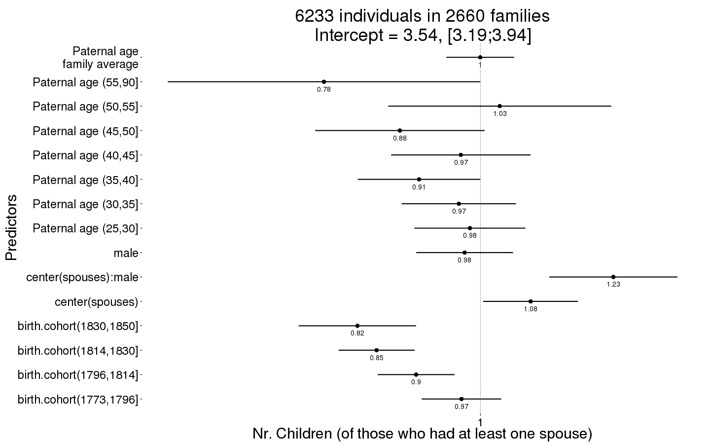
Children_boot = plot_factor_response(Children)
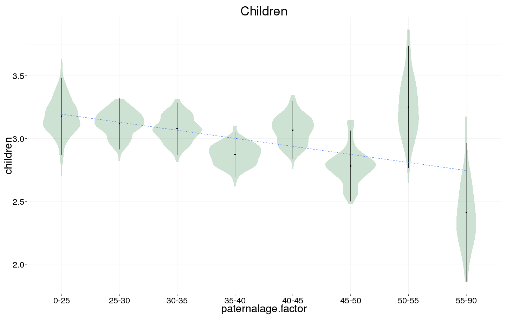
Number of children surviving first year
Children.surviving1y <- bglmer(
children.surviving1y ~ center(children) + birth.cohort + male +paternalage.mean + paternalage.factor + (1|idParents) + (1|idIndividu),
data= krmh.1, subset = children > 0 & byear < 1835,
family = 'poisson', control = control_defaults,
fixef.prior = normal() )
summary(Children.surviving1y)
## Cov prior : idIndividu ~ wishart(df = 3.5, scale = Inf, posterior.scale = cov, common.scale = TRUE)
## : idParents ~ wishart(df = 3.5, scale = Inf, posterior.scale = cov, common.scale = TRUE)
## Fixef prior: normal(sd = c(10, 2.5, ...), corr = c(0 ...), common.scale = FALSE)
## Prior dev : 80
##
## Generalized linear mixed model fit by maximum likelihood (Laplace
## Approximation) [bglmerMod]
## Family: poisson ( log )
## Formula: children.surviving1y ~ center(children) + birth.cohort + male +
## paternalage.mean + paternalage.factor + (1 | idParents) +
## (1 | idIndividu)
## Data: krmh.1
## Control: control_defaults
## Subset: children > 0 & byear < 1835
##
## AIC BIC logLik deviance df.resid
## 19270 19382 -9618 19236 5294
##
## Scaled residuals:
## Min 1Q Median 3Q Max
## -3.690 -0.686 0.020 0.615 3.871
##
## Random effects:
## Groups Name Variance Std.Dev.
## idIndividu (Intercept) 0.000735 0.0271
## idParents (Intercept) 0.000736 0.0271
## Number of obs: 5311, groups: idIndividu, 5311; idParents, 2513
##
## Fixed effects:
## Estimate Std. Error z value Pr(>|z|)
## (Intercept) 0.63778 0.03833 16.6 <2e-16 ***
## center(children) 0.18323 0.00259 70.7 <2e-16 ***
## birth.cohort(1773,1796] 0.06419 0.02182 2.9 0.0033 **
## birth.cohort(1796,1814] -0.03101 0.02168 -1.4 0.1527
## birth.cohort(1814,1830] -0.47025 0.02392 -19.7 <2e-16 ***
## birth.cohort(1830,1850] -0.98614 0.05191 -19.0 <2e-16 ***
## male -0.00650 0.01542 -0.4 0.6735
## paternalage.mean 0.01121 0.02079 0.5 0.5896
## paternalage.factor(25,30] 0.01659 0.03379 0.5 0.6234
## paternalage.factor(30,35] -0.01944 0.03492 -0.6 0.5777
## paternalage.factor(35,40] -0.01997 0.03789 -0.5 0.5982
## paternalage.factor(40,45] -0.03699 0.04324 -0.9 0.3923
## paternalage.factor(45,50] 0.00923 0.05300 0.2 0.8618
## paternalage.factor(50,55] 0.00593 0.06866 0.1 0.9312
## paternalage.factor(55,90] -0.06217 0.09996 -0.6 0.5340
## ---
## Signif. codes: 0 '***' 0.001 '**' 0.01 '*' 0.05 '.' 0.1 ' ' 1
##
## Correlation of Fixed Effects:
## (Intr) cntr() b.(177 b.(179 b.(181 b.(183 male ptrnl. p.(25,
## cntr(chldr) -0.345
## b.(1773,179 -0.312 0.039
## b.(1796,181 -0.313 0.064 0.548
## b.(1814,183 -0.305 0.085 0.497 0.502
## b.(1830,185 -0.112 0.043 0.230 0.232 0.212
## male -0.186 -0.069 0.028 -0.013 0.030 0.002
## paternlg.mn 0.360 0.002 -0.016 0.005 0.038 0.033 0.001
## ptr.(25,30] -0.736 0.023 -0.012 -0.008 -0.006 -0.017 -0.011 -0.198
## ptr.(30,35] -0.769 0.015 -0.010 -0.012 0.006 -0.040 0.008 -0.342 0.795
## ptr.(35,40] -0.756 0.053 -0.029 -0.021 -0.017 -0.046 -0.003 -0.435 0.758
## ptr.(40,45] -0.713 0.025 -0.015 -0.024 -0.021 -0.036 0.016 -0.527 0.692
## ptr.(45,50] -0.637 0.016 0.002 -0.015 -0.025 -0.030 0.001 -0.589 0.596
## ptr.(50,55] -0.529 0.016 -0.045 -0.046 -0.042 -0.038 0.015 -0.586 0.487
## ptr.(55,90] -0.419 0.033 -0.006 -0.021 -0.029 -0.019 -0.021 -0.539 0.362
## p.(30, p.(35, p.(40, p.(45, p.(50,
## cntr(chldr)
## b.(1773,179
## b.(1796,181
## b.(1814,183
## b.(1830,185
## male
## paternlg.mn
## ptr.(25,30]
## ptr.(30,35]
## ptr.(35,40] 0.800
## ptr.(40,45] 0.750 0.756
## ptr.(45,50] 0.665 0.685 0.686
## ptr.(50,55] 0.560 0.588 0.600 0.582
## ptr.(55,90] 0.430 0.463 0.484 0.480 0.442
Children.surviving1y_coefs = fortify_mine(Children.surviving1y)
plot_fortified_mer(Children.surviving1y_coefs, "Nr. Children who survive first year (of those who survived infancy)")
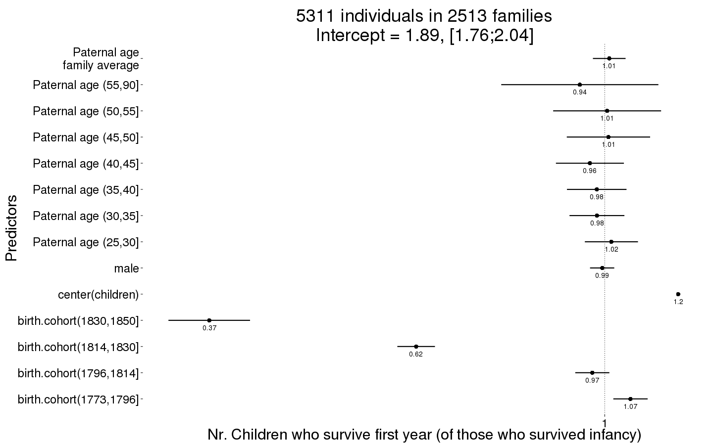
Children.surviving1y_boot = plot_factor_response(Children.surviving1y)
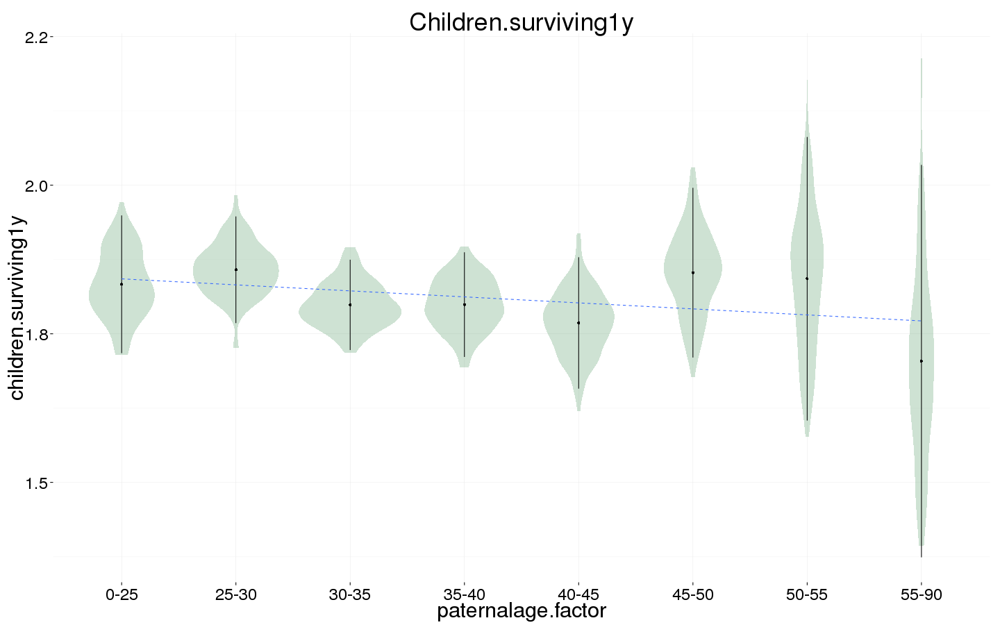
Number of grandchildren
Grandchildren.per.Child <- bglmer(
grandchildren ~ center(children) + birth.cohort + male +paternalage.mean + paternalage.factor + (1|idParents) + (1|idIndividu),
data= krmh.1, subset = children > 0 & byear < 1810,
family = 'poisson', control = control_defaults,
fixef.prior = normal() )
summary(Grandchildren.per.Child)
## Cov prior : idIndividu ~ wishart(df = 3.5, scale = Inf, posterior.scale = cov, common.scale = TRUE)
## : idParents ~ wishart(df = 3.5, scale = Inf, posterior.scale = cov, common.scale = TRUE)
## Fixef prior: normal(sd = c(10, 2.5, ...), corr = c(0 ...), common.scale = FALSE)
## Prior dev : 54
##
## Generalized linear mixed model fit by maximum likelihood (Laplace
## Approximation) [bglmerMod]
## Family: poisson ( log )
## Formula:
## grandchildren ~ center(children) + birth.cohort + male + paternalage.mean +
## paternalage.factor + (1 | idParents) + (1 | idIndividu)
## Data: krmh.1
## Control: control_defaults
## Subset: children > 0 & byear < 1810
##
## AIC BIC logLik deviance df.resid
## 19291 19382 -9631 19261 3113
##
## Scaled residuals:
## Min 1Q Median 3Q Max
## -1.4880 -0.6198 0.0569 0.2203 0.6105
##
## Random effects:
## Groups Name Variance Std.Dev.
## idIndividu (Intercept) 1.0070 1.003
## idParents (Intercept) 0.0809 0.284
## Number of obs: 3128, groups: idIndividu, 3128; idParents, 1608
##
## Fixed effects:
## Estimate Std. Error z value Pr(>|z|)
## (Intercept) 0.7811 0.1004 7.78 7.2e-15 ***
## center(children) 0.2475 0.0079 31.34 < 2e-16 ***
## birth.cohort(1773,1796] 0.1327 0.0518 2.56 0.01 *
## birth.cohort(1796,1814] -0.3137 0.0557 -5.64 1.7e-08 ***
## male -0.0374 0.0421 -0.89 0.37
## paternalage.mean -0.0495 0.0576 -0.86 0.39
## paternalage.factor(25,30] -0.0409 0.0942 -0.43 0.66
## paternalage.factor(30,35] 0.0124 0.0971 0.13 0.90
## paternalage.factor(35,40] -0.0695 0.1049 -0.66 0.51
## paternalage.factor(40,45] -0.0524 0.1203 -0.44 0.66
## paternalage.factor(45,50] 0.0407 0.1460 0.28 0.78
## paternalage.factor(50,55] 0.0504 0.1879 0.27 0.79
## paternalage.factor(55,90] 0.1219 0.2678 0.46 0.65
## ---
## Signif. codes: 0 '***' 0.001 '**' 0.01 '*' 0.05 '.' 0.1 ' ' 1
##
## Correlation of Fixed Effects:
## (Intr) cntr() b.(177 b.(179 male ptrnl. p.(25, p.(30, p.(35,
## cntr(chldr) -0.265
## b.(1773,179 -0.263 0.037
## b.(1796,181 -0.237 0.041 0.523
## male -0.187 -0.057 0.021 -0.012
## paternlg.mn 0.378 0.002 -0.014 0.016 0.005
## ptr.(25,30] -0.767 -0.018 -0.024 -0.019 -0.013 -0.196
## ptr.(30,35] -0.804 -0.016 -0.027 -0.032 -0.004 -0.343 0.801
## ptr.(35,40] -0.789 0.000 -0.047 -0.042 -0.008 -0.438 0.765 0.814
## ptr.(40,45] -0.740 -0.017 -0.036 -0.050 0.009 -0.524 0.695 0.758 0.768
## ptr.(45,50] -0.661 -0.004 -0.023 -0.057 -0.004 -0.567 0.599 0.671 0.693
## ptr.(50,55] -0.558 -0.013 -0.058 -0.068 0.014 -0.582 0.494 0.571 0.602
## ptr.(55,90] -0.444 0.013 -0.018 -0.034 -0.031 -0.537 0.371 0.443 0.476
## p.(40, p.(45, p.(50,
## cntr(chldr)
## b.(1773,179
## b.(1796,181
## male
## paternlg.mn
## ptr.(25,30]
## ptr.(30,35]
## ptr.(35,40]
## ptr.(40,45]
## ptr.(45,50] 0.688
## ptr.(50,55] 0.611 0.587
## ptr.(55,90] 0.493 0.482 0.457
Grandchildren.per.Child_coefs = fortify_mine(Grandchildren.per.Child)
plot_fortified_mer(Grandchildren.per.Child_coefs, "Nr. of grandchildren per child")
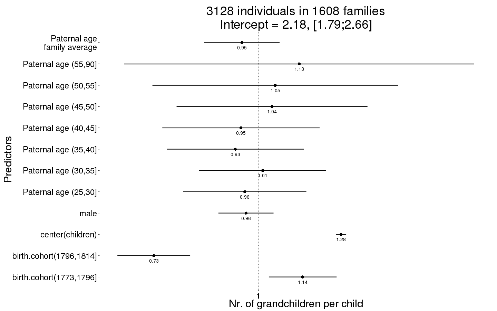
Grandchildren.per.Child_boot = plot_factor_response(Grandchildren.per.Child)
## Warning in bootMer(fit, mypred, nsim = 100, verbose = T, parallel =
## "multicore", : some bootstrap runs failed (100/100)
## Error in eval(expr, envir, enclos): object 'value' not found
Any surviving children
Any_surviving_children <- bglmer(
any_surviving_children ~ birth.cohort + male + paternalage.mean + paternalage.factor + (1|idParents),
data= krmh.1, subset = byear < 1835,
family = 'binomial', control = control_defaults,
fixef.prior = normal() )
summary(Any_surviving_children)
## Cov prior : idParents ~ wishart(df = 3.5, scale = Inf, posterior.scale = cov, common.scale = TRUE)
## Fixef prior: normal(sd = c(10, 2.5, ...), corr = c(0 ...), common.scale = FALSE)
## Prior dev : 57
##
## Generalized linear mixed model fit by maximum likelihood (Laplace
## Approximation) [bglmerMod]
## Family: binomial ( logit )
## Formula:
## any_surviving_children ~ birth.cohort + male + paternalage.mean +
## paternalage.factor + (1 | idParents)
## Data: krmh.1
## Control: control_defaults
## Subset: byear < 1835
##
## AIC BIC logLik deviance df.resid
## 16784 16897 -8377 16754 13974
##
## Scaled residuals:
## Min 1Q Median 3Q Max
## -1.107 -0.652 -0.560 1.208 2.947
##
## Random effects:
## Groups Name Variance Std.Dev.
## idParents (Intercept) 0.221 0.47
## Number of obs: 13989, groups: idParents, 3266
##
## Fixed effects:
## Estimate Std. Error z value Pr(>|z|)
## (Intercept) -0.7930 0.0914 -8.68 < 2e-16 ***
## birth.cohort(1773,1796] 0.3847 0.0594 6.47 9.7e-11 ***
## birth.cohort(1796,1814] 0.4735 0.0593 7.99 1.3e-15 ***
## birth.cohort(1814,1830] 0.1286 0.0610 2.11 0.03518 *
## birth.cohort(1830,1850] -0.7531 0.1188 -6.34 2.3e-10 ***
## male -0.2010 0.0384 -5.23 1.7e-07 ***
## paternalage.mean 0.1694 0.0530 3.20 0.00138 **
## paternalage.factor(25,30] -0.0227 0.0852 -0.27 0.78959
## paternalage.factor(30,35] -0.1437 0.0877 -1.64 0.10105
## paternalage.factor(35,40] -0.2687 0.0945 -2.84 0.00446 **
## paternalage.factor(40,45] -0.4500 0.1071 -4.20 2.7e-05 ***
## paternalage.factor(45,50] -0.4907 0.1303 -3.77 0.00017 ***
## paternalage.factor(50,55] -0.4917 0.1682 -2.92 0.00346 **
## paternalage.factor(55,90] -0.6573 0.2381 -2.76 0.00577 **
## ---
## Signif. codes: 0 '***' 0.001 '**' 0.01 '*' 0.05 '.' 0.1 ' ' 1
##
## Correlation of Fixed Effects:
## (Intr) b.(177 b.(179 b.(181 b.(183 male ptrnl. p.(25, p.(30,
## b.(1773,179 -0.318
## b.(1796,181 -0.336 0.553
## b.(1814,183 -0.320 0.520 0.553
## b.(1830,185 -0.143 0.269 0.277 0.289
## male -0.221 0.000 -0.003 0.024 0.016
## paternlg.mn 0.356 -0.010 0.004 0.040 0.032 -0.010
## ptr.(25,30] -0.764 -0.013 0.001 -0.012 -0.017 0.001 -0.172
## ptr.(30,35] -0.795 -0.027 -0.014 -0.022 -0.044 0.009 -0.311 0.793
## ptr.(35,40] -0.780 -0.034 -0.024 -0.035 -0.049 0.012 -0.416 0.758 0.805
## ptr.(40,45] -0.732 -0.040 -0.040 -0.049 -0.043 0.017 -0.499 0.691 0.752
## ptr.(45,50] -0.653 -0.034 -0.031 -0.055 -0.051 0.007 -0.560 0.594 0.665
## ptr.(50,55] -0.549 -0.038 -0.035 -0.052 -0.045 0.014 -0.562 0.481 0.554
## ptr.(55,90] -0.440 -0.020 -0.023 -0.050 -0.029 0.000 -0.549 0.366 0.437
## p.(35, p.(40, p.(45, p.(50,
## b.(1773,179
## b.(1796,181
## b.(1814,183
## b.(1830,185
## male
## paternlg.mn
## ptr.(25,30]
## ptr.(30,35]
## ptr.(35,40]
## ptr.(40,45] 0.767
## ptr.(45,50] 0.693 0.693
## ptr.(50,55] 0.589 0.600 0.587
## ptr.(55,90] 0.477 0.497 0.496 0.467
Any_surviving_children_coefs = fortify_mine(Any_surviving_children)
plot_fortified_mer(Any_surviving_children_coefs, "Any surviving children")
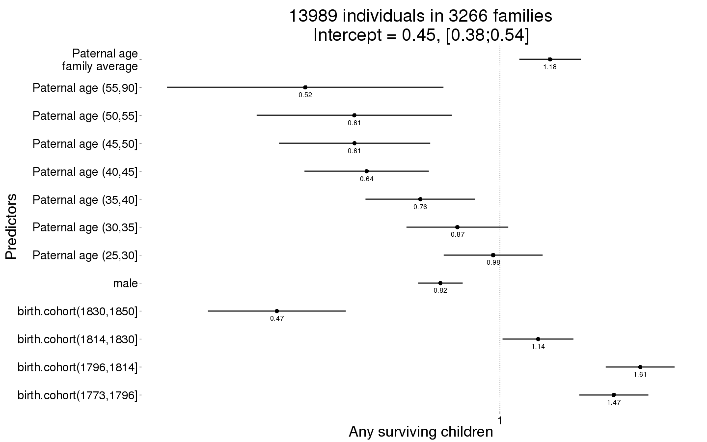
Any_surviving_children_boot = plot_factor_response(Any_surviving_children)
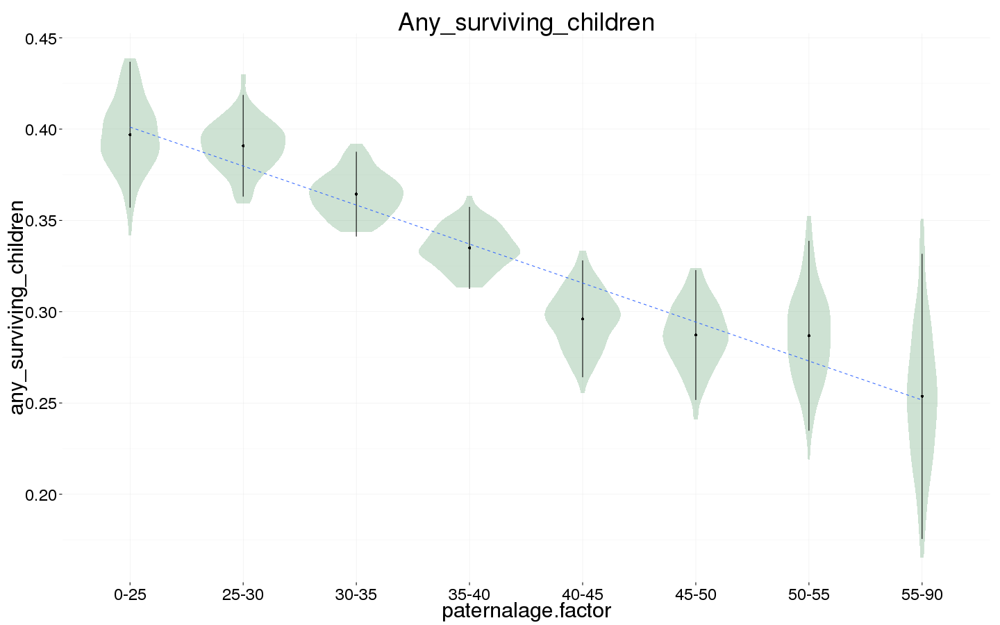